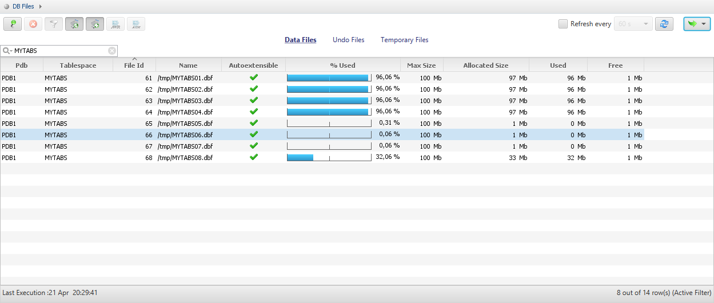
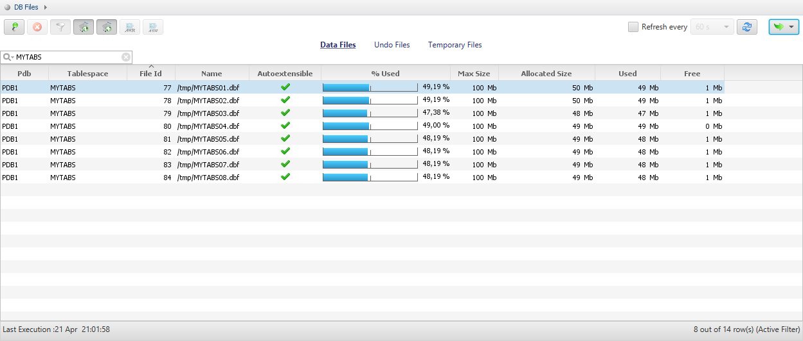

This was first published on https://www.dbi-services.com/blog/securefiles-on-multi-datafiles-tablespaces/ (2017-04-21)
Republishing here for new followers. The content is related to the versions available at the publication date.
. 
When we have a tablespace with multiple datafiles, we are used to seeing the datafiles filled evenly, the extents being allocated in a round-robin fashion. In the old time, we used that to maximize performance, distributing the tables to all disks. Today, we use LVM striping, maximum Inter-Policy, ASM even distribution. And we may even use bigfile tablespaces, so that we don’t care about having multiple datafiles.
But recently, during test phase of migration, I came upon something like this:
To reproduce the case, I’ve created a tablespace with 8 datafiles:
SQL> create tablespace MYTABS datafile
2 '/tmp/MYTABS01.dbf' size 1M autoextend on maxsize 100M,
3 '/tmp/MYTABS02.dbf' size 1M autoextend on maxsize 100M,
4 '/tmp/MYTABS03.dbf' size 1M autoextend on maxsize 100M,
5 '/tmp/MYTABS04.dbf' size 1M autoextend on maxsize 100M,
6 '/tmp/MYTABS05.dbf' size 1M autoextend on maxsize 100M,
7 '/tmp/MYTABS06.dbf' size 1M autoextend on maxsize 100M,
8 '/tmp/MYTABS07.dbf' size 1M autoextend on maxsize 100M,
9 '/tmp/MYTABS08.dbf' size 1M autoextend on maxsize 100M
10 /
Tablespace created.
This was a 11g to 12c migration, with Data Pump, and a good occasion to convert all LOB to SecureFiles with the transform=lob_storage:securefile parameter. And this tablespace is the one where the LOB segments are stored. I reproduced it with:
SQL> create table MYTABLE ( x clob ) tablespace USERS
2 LOB(x) store as securefile MYLOBSEG (tablespace MYTABS disable storage in row);
Table created.
Then I inserted about 80MB:
SQL> insert into MYTABLE select lpad('x',100000) from xmltable('1 to 8000') ;
8000 rows created.
SQL> select file_id,file_name,blocks,user_blocks from dba_data_files where tablespace_name='MYTABS' order by file_id;
FILE_ID FILE_NAME BLOCKS USER_BLOCKS
---------- ------------------------------ ---------- -----------
61 /tmp/MYTABS01.dbf 128 120
62 /tmp/MYTABS02.dbf 128 120
63 /tmp/MYTABS03.dbf 128 120
64 /tmp/MYTABS04.dbf 9344 9336
65 /tmp/MYTABS05.dbf 128 120
66 /tmp/MYTABS06.dbf 128 120
67 /tmp/MYTABS07.dbf 128 120
68 /tmp/MYTABS08.dbf 128 120
8 rows selected.
SQL> select file_id,segment_type,sum(blocks) from dba_extents where tablespace_name='MYTABS' group by file_id,segment_type order by file_id,segment_type;
FILE_ID SEGMENT_TYPE SUM(BLOCKS)
---------- ------------------ -----------
64 LOBSEGMENT 9216
65 LOBINDEX 8
65 LOBSEGMENT 24
And I continued to load rows, and observed the datafiles filled to their maxsize one after the other, without numeric or alphabetical order.
SQL> select file_id,file_name,blocks,user_blocks from dba_data_files where tablespace_name='MYTABS' order by file_id;
FILE_ID FILE_NAME BLOCKS USER_BLOCKS
---------- ------------------------------ ---------- -----------
61 /tmp/MYTABS01.dbf 8320 8312
62 /tmp/MYTABS02.dbf 12416 12408
63 /tmp/MYTABS03.dbf 12416 12408
64 /tmp/MYTABS04.dbf 12416 12408
65 /tmp/MYTABS05.dbf 128 120
66 /tmp/MYTABS06.dbf 128 120
67 /tmp/MYTABS07.dbf 128 120
68 /tmp/MYTABS08.dbf 128 120
8 rows selected.
SQL> select file_id,segment_type,sum(blocks) from dba_extents where tablespace_name='MYTABS' group by file_id,segment_type order by file_id,segment_type;
FILE_ID SEGMENT_TYPE SUM(BLOCKS)
---------- ------------------ -----------
61 LOBSEGMENT 8192
62 LOBSEGMENT 12288
63 LOBSEGMENT 12288
64 LOBSEGMENT 12288
65 LOBINDEX 8
65 LOBSEGMENT 24Here are some screenshots during this load
This occurs only with SecureFiles. With the same load into LOB stored as BasicFile I got the following distribution: 
Note that the inserts to BasicFile were about two times slower than the same into SecureFiles.
I don’t see any bad consequences about that, and this may even be an improvement when concurrent sessions are loading the LOBs. When the datafile picked-up looks random, a guess is that it depends on a process ID to try to distribute the concurrent load. And if you want to distribute data over multiple disks, then you should do it at a lower level. However, it is 30 years behavior that changes and it’s better to be aware of it: datafiles may reach their maxsize even when the tablespace is not full. I order to be sure that it is the expected behavior, I opened an SR with easy to reproduce testcase. Status is ‘review update’ for 9 days (SR 3-14677784041) and I’ll update this post is I get an answer.
{kind=link}
{kind=link}
{kind=link}
{kind=link}